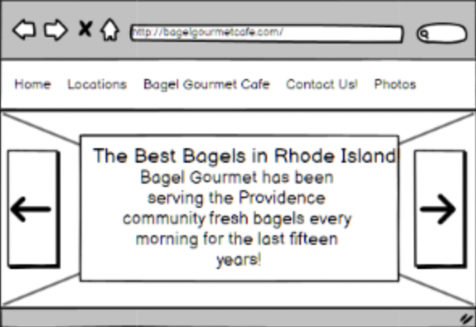
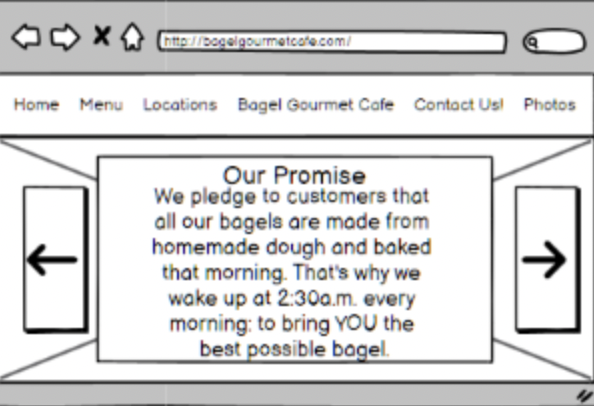
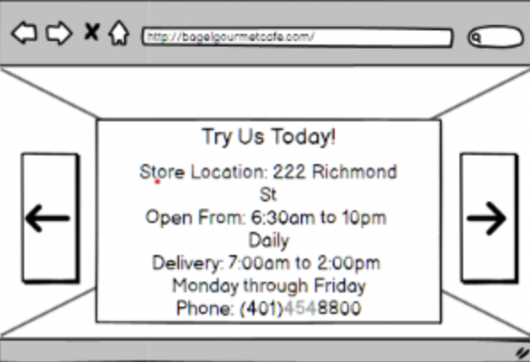
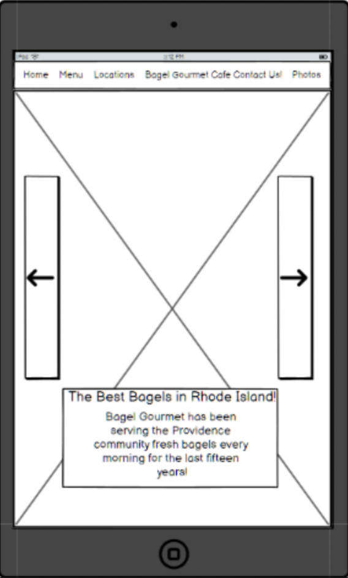
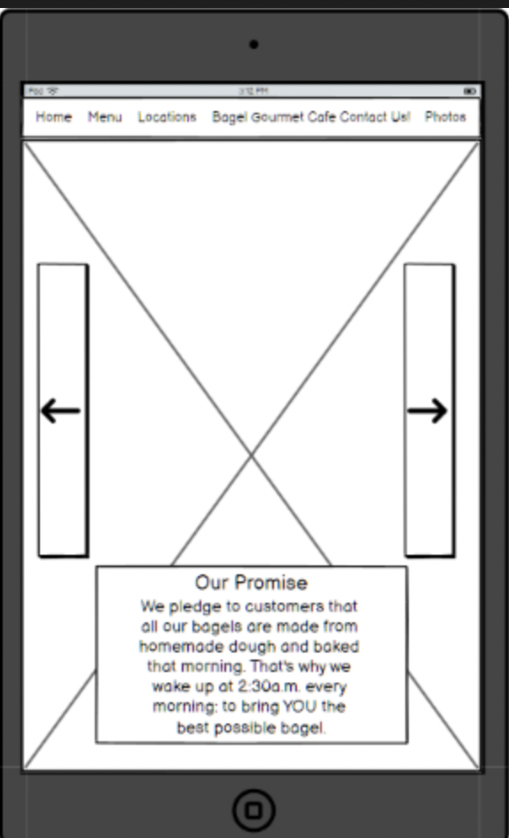
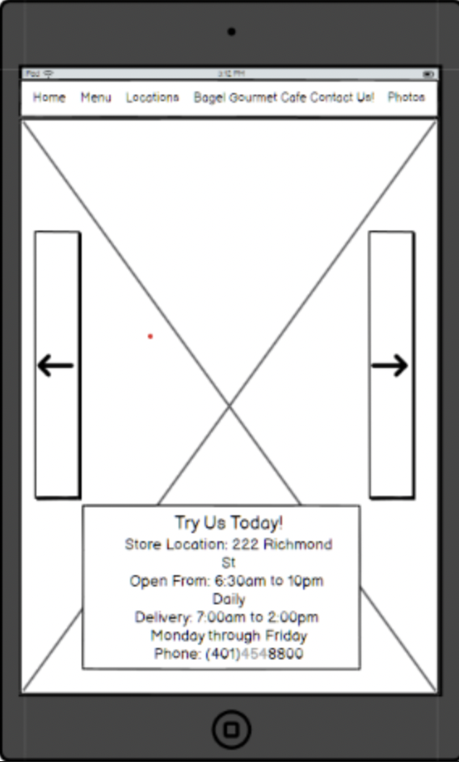
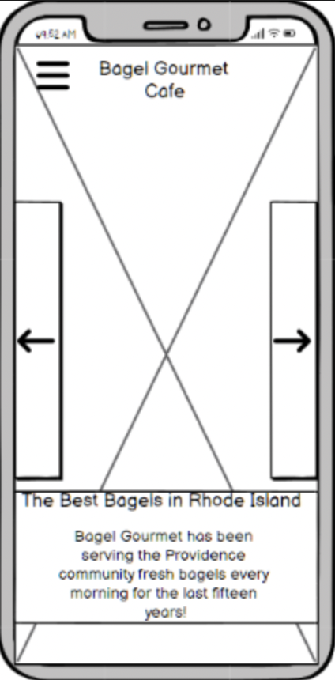
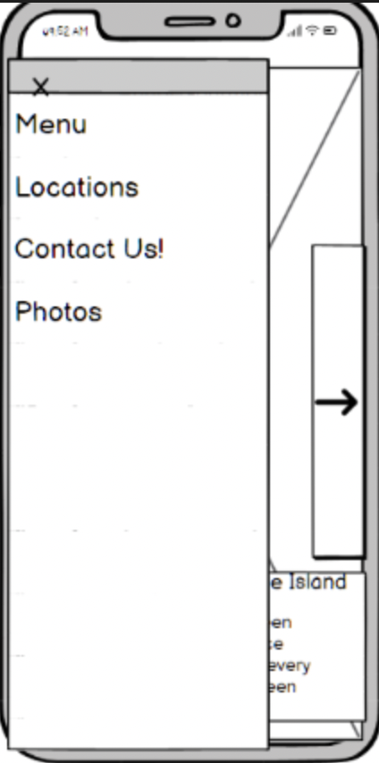
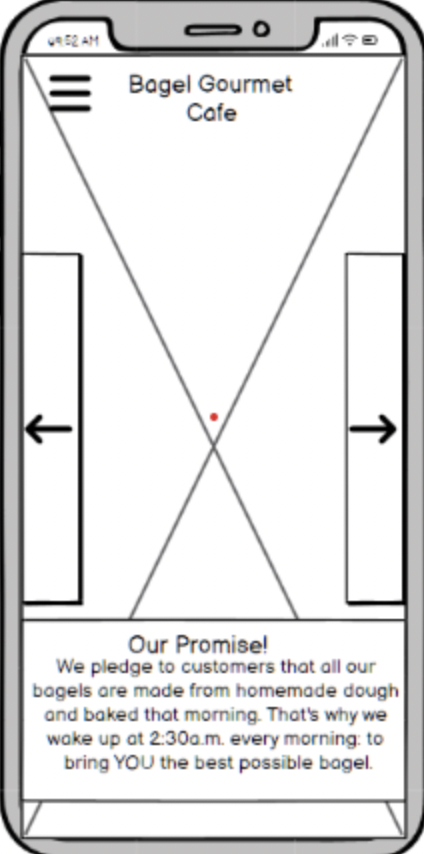
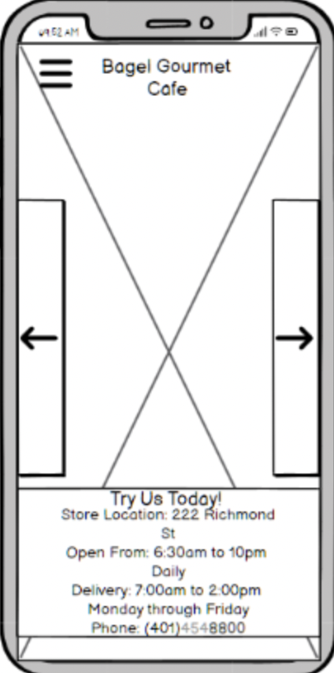

Context
Bagel Gourmet is a community staple among the Brown University community. When the dining halls are unavailable,
students flock to get bagels for breakfast. However, when looking for its website, not only do we get an entirely unappealing site:
We get one that is actively difficult to navigate. Everything is in an awkward location, the color scheme is cold and uninviting,
there is no accessibility support, and it looks "old". From an accessibility standpoint, it fails with regards to translatability and accessibility for
the visually impaired due to its small text.
Initial Designs
There were two halves to what I wanted to do with this project. The first was to clean up this website completely, removing
superflours content. This essentially meant simplifying a lot of the format. To do so, I added a menu bar with larger text,
and used images of the bagels to emphasize the actual selling point of the buisness. The second was to make it responsive to different web formats.
In order to do so, I developed a low fi design for each format: Web, Mobile, and Tablet:
Website Design:



Tablet Design:



Phone Design:



